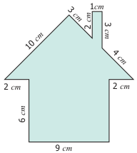
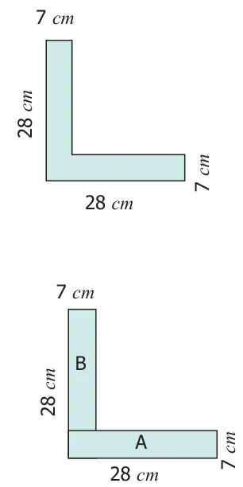
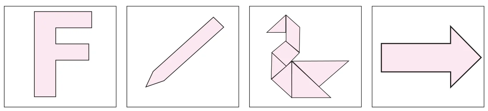
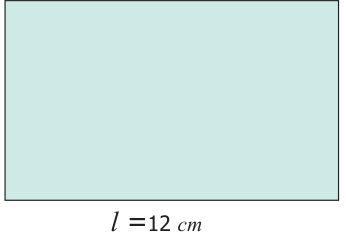
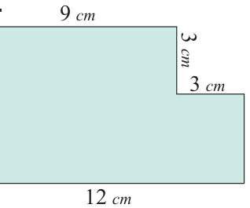
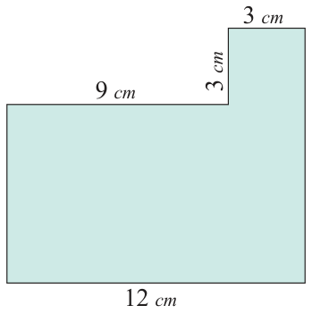
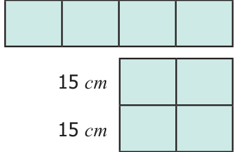
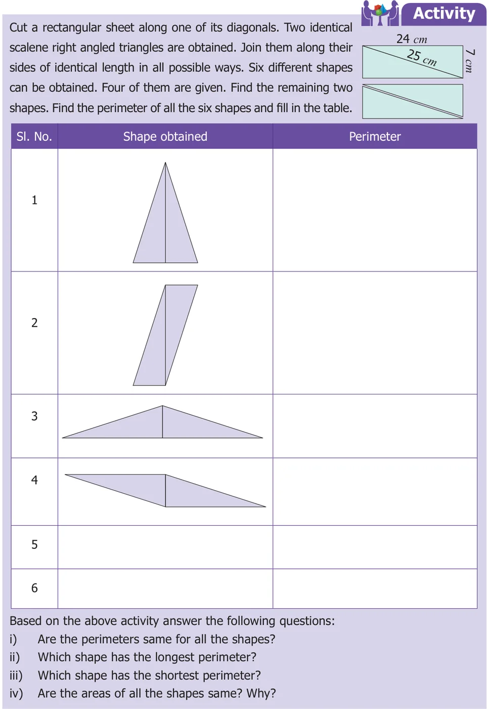

A Combined shape is the combination of several closed shapes. The perimeter is calculated by adding all the outer sides (boundaries) of the combined shape. The area is calculated by adding all the areas of closed shapes from which the combined shape is formed.
Example 12 Find the perimeter of the given figure. Solution Perimeter = Total length of the boundary

\(= (6 + 2 + 10 + 3 + 2 + 1 + 3 + 4 + 2 + 6 + 9)\) cm
\(= 48\) cm
Example 13 Find the perimeter and the area of the following 'L' shaped figure. Solution Perimeter \(= (28 + 7 + 21 + 21 + 7 + 28)\) cm.

\(= 112\) cm.
To find the area of the L shaped figure, it is divided into two rectangles A and B.
| Rectangle-A | Rectangle-B |
|---|---|
\(l = 28\) cm \(b = 7\) cm \(\text{A} = l \times b\) sq. cm \(= 28 \times 7\) \(= 196\) sq. cm |
\(l = 21\) cm \(b = 7\) cm \(\text{A} = l \times b\) sq. cm. \(= 21 \times 7\) \(= 147\) sq. cm |
The area of the 'L' shaped figure \(= (196 + 147)\) sq. cm
\(= 343\) sq. cm.
Activity
Find the area of the given 'L' shaped rectangular figure by dividing it into squares of equal sizes.
Think
Can you find the area of 'L' shaped figure as the difference between two areas.
Try these
Measure using ruler and find the perimeter of each of the following diagram.

Activity
Form all possible shapes of perimeter 80 cm with 9 identical squares, each of side 4 cm.
3.4.1 Impact on Removing / Adding a portion from / to a given shape
Consider a rectangle of sides 8 cm and 12 cm. Length, \(l = 12\) cm; Breadth \(b = 8\) cm. Area, \(\text{A} = (l \times b)\) sq. units.

\(= 12 \times 8\)
\(= 96\) sq. cm.
Perimeter, \(\text{P} = 2(l + b)\) units.
\(= 2(12 + 8)\)
\(= 40\) cm.
Find the area and perimeter of the rectangle in the following situations and observe the changes.
Situation 1
A square of side 3 cm is cut at a corner of the rectangle. Area, \(\text{A} = (l \times b) - (s \times s)\) sq. units.

\(= (12 \times 8) - (3 \times 3)\)
\(= 87\) sq. cm.
Perimeter, \(\text{P} =\) (Total boundary) units.
\(= 8+12+5+3+3+9 = 40\) cm.
The perimeter is not changed. But the area is reduced.
Situation 2

A square of side 3 cm is attached to the rectangle. Area, \(\text{A} = (l \times b) + (s \times s)\) sq. units.
\(= (12 \times 8) + (3 \times 3)\)
\(= 105\) sq. cm.
Perimeter, \(\text{P} =\) (Total boundary) units.
\(= 8+12+11+3+3+9 = 46\) cm.
Here both the perimeter and the area are increased.
Example 14 Four identical square floor mats of side 15 cm are joined together to form either a rectangular mat or a square mat. Which mat will have a larger area and a longer perimeter? Solution Perimeter of a rectangle, \(\text{P} = 2(l + b)\) units.
\(= 2(60+15)\) cm. \(= 150\) cm.

Area of a rectangle, \(\text{A} = (l \times b)\) sq. units.
\(= 60 \times 15 = 900\) sq. cm.
Perimeter of a square, \(\text{P} = (4 \times s)\) units
\(= (4 \times 30)\) cm \(= 120\) cm
Area of a square, \(\text{A} = (s \times s)\) sq. units.
\(= 30 \times 30 = 900\) sq. cm.
There is no change in their areas. But, the rectangular mat will have longer perimeter.

- Shapes with the same perimeter may have different areas.
- Shapes with the same area may have different perimeters.